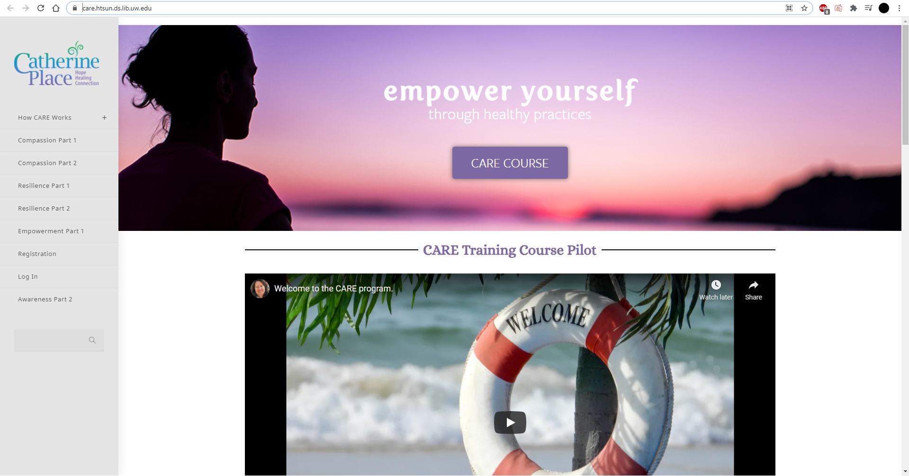
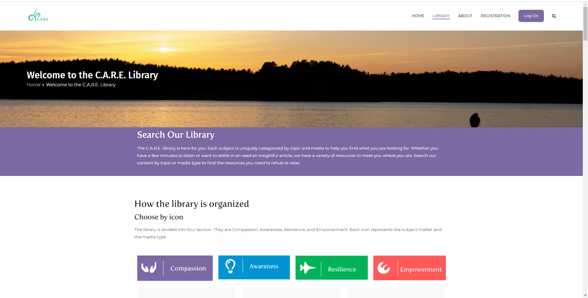
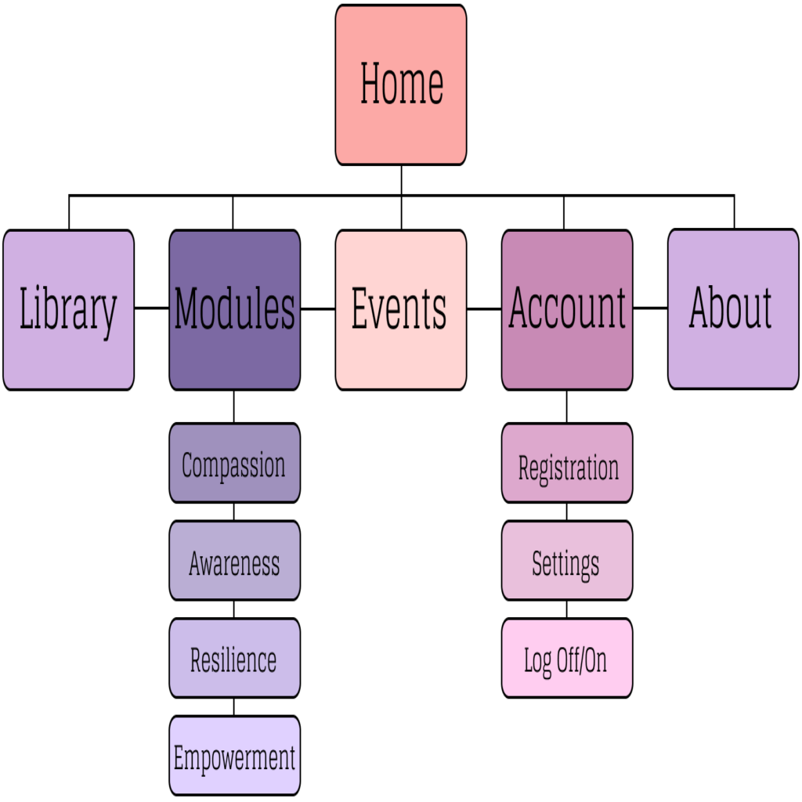

This project was completed for an Advanced Web Design course provided by the University of Washington in 2021. The goal of the project was to work with team members to redesign an educational website for a local business. The website was built using WordPress and designed by myself and three other teamates. The final website was approved by the client and can be viewed here: Care Website. The first image is a screenshot of the original website and the second image is a screenshot of the finished redesign.
The website was built by following a brand guide provided by the client which was an incredibly useful tool for maintaning continuity across different pages. It was important for us to meet with the client in order to understand their needs and to get their input through different iterations of the design process. Overall, the client was very happy with the final result.
The website needed to be designed in a way that allowed users to register for a structured curriculum provided by the client. It also included a searchable library of content that the client used while conducting classes. We designed the website to be responsive and highly accessible for users who may not be as familiar with online courses and content.
Users are able to track their progress, communicate with the professor, and browse content when they register for the course. The redesign dramatically improved the user experience across the website and allowed for my teamates and I to better understand the web design process in a professional environment.
A site map was used in the early stages of planning in order to strategize how the content should be laid out across the website. This is just one example of the many different tools and strategies that we implemented to optimize the user experience of the website. Many design deliverables, such as this site map, were built using Figma.
Another example of a design deliverable that was used
for this project is the wireframe. This image is a wireframe of the landing page
and was used to help us visualize how the content should be structured on the page.
This became an important tool for content management.
The project was a great opportunity for me to learn about advanced web design
principles that are used in professional settings. The UX design strategies
involved in this project have proven to be incredibly useful for my other web
design and developement projects and I am looking forward to learning more.